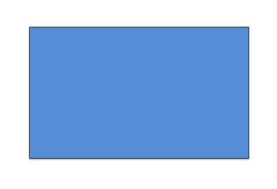

Прямоугольник считается временной, переходной формой. Обычно ее выбирают люди, которые в данный момент крайне недовольны собой и своей жизнью и желают изменить эту ситуацию к лучшему. «Там все есть для счастья, меня там только нет, но это значит, что я там буду» - вот девиз, под которым они действуют. Основные качества «Прямоугольников» - это любопытство, смелость и интерес ко всему новому. Они жаждут перемен всем сердцем и впитывают новые знания, как губка. Люди крайне редко пребывают в «фазе Прямоугольника» длительное время – как правило, после того, как решение о том, что нужно сделать, принято, они «мутируют» в любую другую фигуру из оставшихся четырех.
